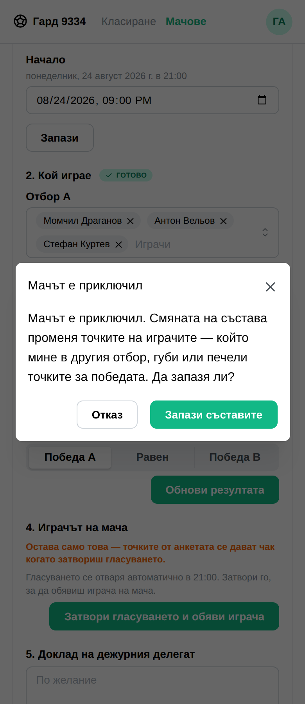
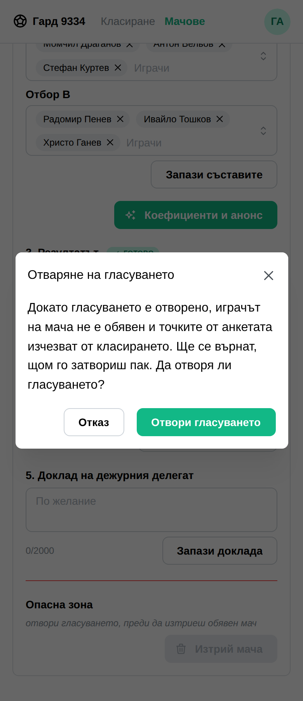
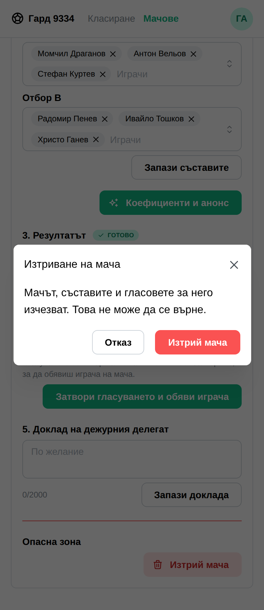
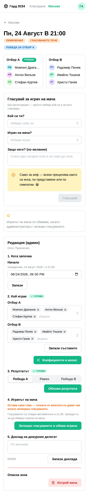

optimum-stars · страницата на мача
Всичко е карано през истинско приложение — и прозорчетата вече са негови, така че се виждат на снимките.
Излиза само когато мачът е приключил — преди това няма точки, които да се местят.


И точно това прави, ако натиснеш зеленото — измерено върху истинска таблица:
обявен играч на мача Антон 6 · Стефан 6 · Ивайло 4 · Радомир 4 · Момчил 3 след отваряне Антон 3 · Момчил 3 · Стефан 3 · Ивайло 1 · Радомир 1
Натиснеш ли „Отказ“, нищо не се случва — и в двата случая проверено срещу класирането.
Двете, които трият ред — мач и профил — са в червено. Останалите са решения, на които обикновено се отговаря с „да“.

Вече са на приложението, не на браузъра. Бяха пет пъти window.confirm — текстът наш и на български, рамката на браузъра: отгоре „golche.bg says“, а на телефон с английски език бутоните пишеха „OK“ и „Cancel“. Сега минават през @mantine/modals, през едно място в lib/confirm.ts, така че всички изглеждат и говорят еднакво.
Всеки зелен бутон повтаря действието — „Отвори гласуването“, „Изтрий мача“ — вместо да пише „ОК“. Последното, което четеш, преди да натиснеш, е какво ще стане.
Сменени са и трите стари: изтриване на мач, изтриване на профил и „вече си гласувал“. Два вида прозорчета за едно и също нещо е по-лошо от кой да е от двата.
